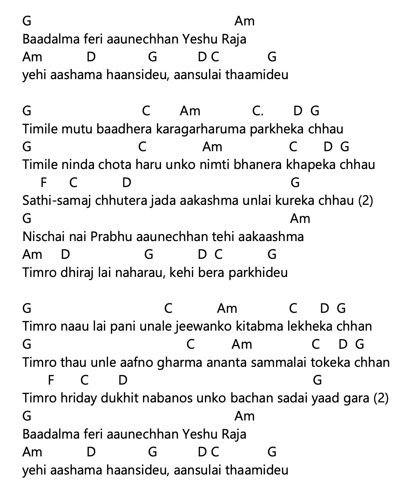
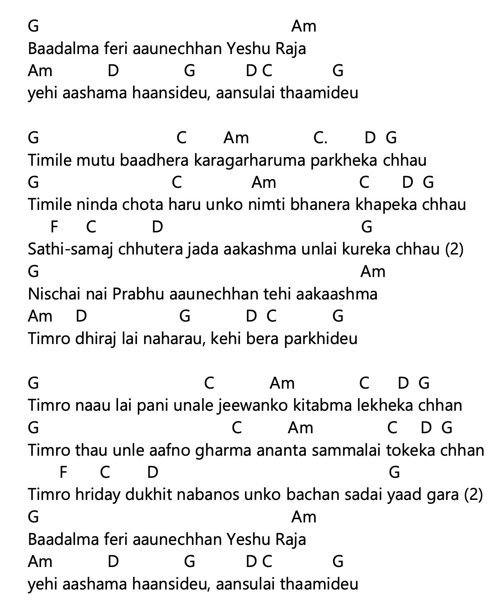

नेपाली Lyrics (Copyable)
बादलमा फेरि आउनेछन् येशू राजा यही आशामा हाँसिदेऊ, आँसुलाई थामिदेऊ
तिमीले मुटु बाँधेर कारागारहरूमा पर्खेका छौ तिमीले निन्दा चोटहरू उनको निम्ति भनेर खपेका छौ
साथी-समाज छुटेर जाँदा, आकाशमा उनलाई कुरेका छौ (२)
निश्चय नै प्रभु आउनेछन् त्यही आकाशमा तिम्रो धिरजलाई नहराऊ, केही बेर पर्खिदेऊ
तिम्रो नाउँ लाई पनि उनले जीवनको किताबमा लेखेका छन्
तिम्रो ठाउँ उनले आफ्नो घरमा अनन्तसम्मलाई तोकेका छन्
तिम्रो हृदय दुःखित नबनोस् उनको वचन सधैँ याद गर (२)
बादलमा फेरि आउनेछन् येशू राजा यही आशामा हाँसिदेऊ, आँसुलाई थामिदेऊ
 
